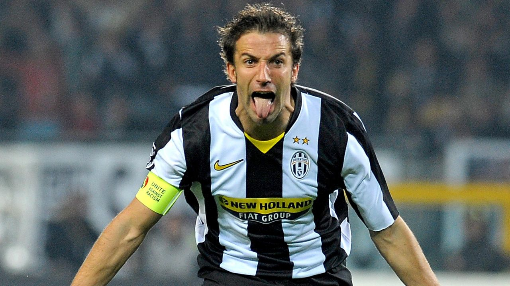
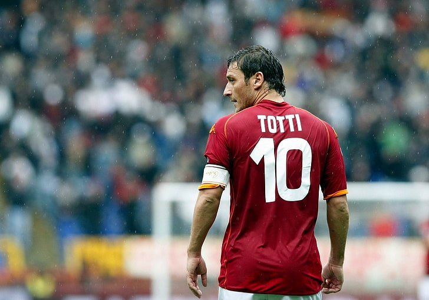
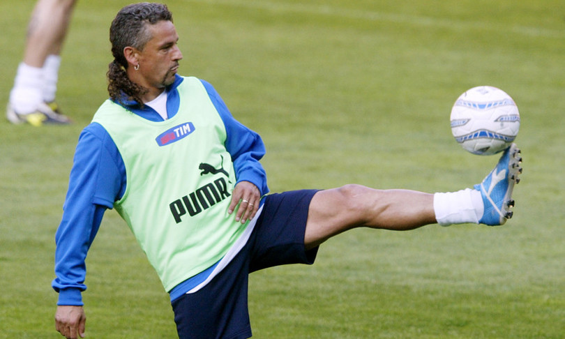
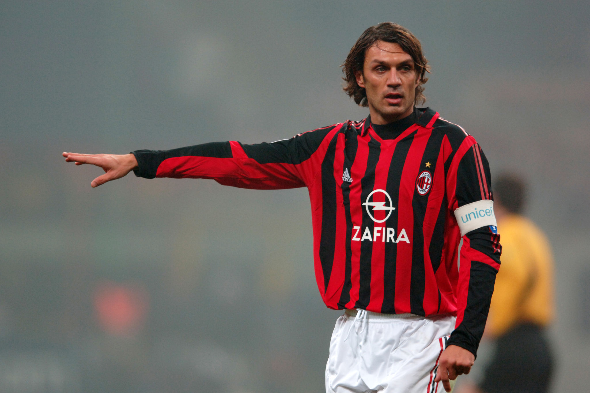
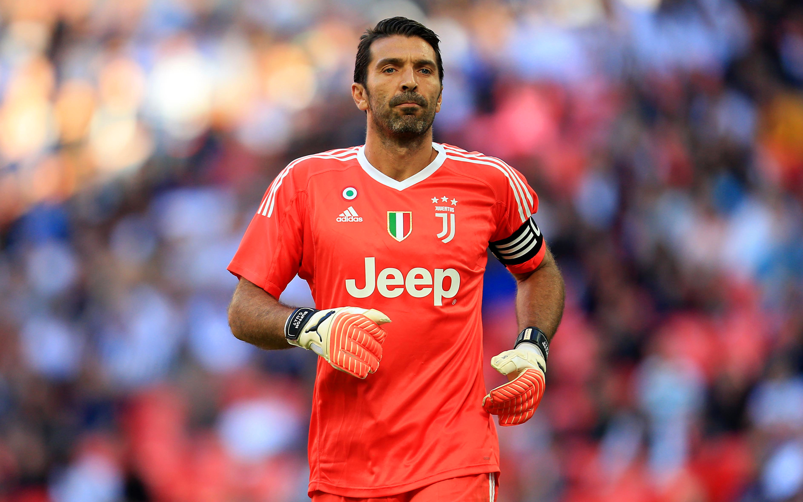

1.
Alessandro Del Piero
Caratteristica preferita: Tiro
Quando si parla di Alessandro Del Piero, anche detto “Pinturicchio” si parla di uno dei calciatori più forti del calcio italiano e della storia del calcio.
Del Piero ha conquistato una serie interminabile di trofei con la maglia della Juventus e ha vinto i Mondiali del 2006 con la maglia azzurra.
Dopo aver partecipato a 3 Mondiali e 4 Europei, Alessandro Del Piero nel 2012 ha lasciato la Juventus per
tentare la fortuna in Australia e poi in India. Del Piero ha poi lasciato il calcio definitivamente nel 2014.
Noi italiani ricorderemo in particolar modo il gol del 2-0 nella semifinale del mondiale 2006 contro la Germania.
Nella stagione 2008-09 la Juventus tornò in Champions League e Del Piero mise a segno una straordinaria doppietta al
Santiago Barnabeu contro il Real Madrid, diventando il primo giocatore italiano a segnare due reti nello
stadio delle merengues. L’ovazione concessagli dal pubblico madrileno entrò nella storia del calcio.
Calciatore con una classe incredibile, dentro e fuori del campo, un esempio di correttezza come pochi altri.
Lo metto al primo posto sia per le doti tecniche che per quelle umane, ha giocato in serie B in uno dei momenti migliori
della sua carriera pur di non abbandonare la propria squadra.

2.
Francesco Totti
Caratteristica preferita: Visione di gioco
Francesco Totti nasce e vive la sua infanzia nell’area di Porta Metronia.
Giocherà per 24 anni con i colori giallorossi, a soli 21 anni diventerà capitano della Roma,
segnerà con questa maglia la bellezza di 307 gol e giocherà con questi colori per ben 786 partite.
Totti rappresenta Roma e la romanità. La sua carriera è la manifestazione di qualcosa di viscerale e unico
che è probabilmente difficile spiegare dall’esterno, per chi non vive la città eterna.
I riconoscimenti del suo talento sono arrivati da tutti i più grandi giocatori. Da Pelè a Diego Armando Maradona, da Cristiano Ronaldo a Zinedine Zidane.
Totti ha rappresentato una bandiera, il calciatore che tutti i tifosi vorrebbero come capitano della propria squadra.
A dimostrazione di ciò, è spesso uscito tra gli applausi, le standing ovation di interi stadi anche in trasferta.
Al Santiago Bernabeu, a San Siro, a Marassi, tutti hanno assistito al suo estro, nessuno ha potuto negarlo,
nessuno ne è rimasto indifferente.
Lo metto al secondo posto perchè è stato un giocatore con dei colpi di classe e di genio pazzeschi, l'unica "nota nera" sono alcuni
comportamenti che ha avuto nel corso della sua carriera, ma come capitano e calciatore è stato un fenomeno indiscusso.
Sarà per sempre l'8º re di Roma.

3.
Roberto Baggio
Caratteristica preferita: Controllo palla
Roberto Baggio nasce a Caldogno (in provincia di Vicenza) è un ex calciatore, attaccante di Fiorentina,
Juventus (dove ha vinto nella stagione 94/95 lo scudetto e la Coppa Italia), Milan (scudetto 95/96), Bologna,
Inter e Brescia, dove ha concluso la carriera nel campionato 2003/04 (la società, in suo onore,
ha ritirato la maglia numero 10).
Il divin codino (il suo soprannome per via dell'acconciatura) è riconosciuto come uno dei più forti calciatori
della storia mondiale di questo sport, infatti nel 2004 Pelé l'ha inserito nella FIFA 100, la lista dei 125
più grandi calciatori viventi.
Non ha mai vinto la classifica marcatori della serie A ma è settimo, con 205 reti in 452 partite,
nella graduatoria dei cannonieri di tutti i tempi, preceduto solo da Piola, Nordahl, Totti, Meazza,
Altafini e Di Natale (che l'ha superato il 2 maggio 2015).
Nel 1993 ha vinto il Pallone d'oro, riconoscimento assegnato solo ad altri quattro calciatori italiani:
Omar Sívori, Gianni Rivera, Paolo Rossi e Fabio Cannavaro.
In Nazionale ha totalizzato 56 presenze e 27 gol, che lo posizionano al quarto posto tra i marcatori azzurri,
a pari merito con un altro grande numero 10: Alessandro Del Piero. Altro primato in azzurro di Baggio è
essere l'unico giocatore italiano ad aver segnato in tre Mondiali diversi (1990, 1994, 1998).
Vice campione del mondo nel 1994, ha vinto il bronzo ai Mondiali di Italia '90.
Lo metto al terzo posto perchè non l'ho vissuto pienamente, ma è stato un calciatore straordinario con un'eleganza a dir poco
invidiabile.

4.
Paolo Maldini
Caratteristica preferita: Intelligenza tattica
Paolo Maldini nasce a Milano, è un ex calciatore di ruolo difensore, ha indossato solo la maglia del Milan, sin dalle giovanili.
In 25 anni di carriera, con prestazioni di altissimo livello, ha vinto 26 trofei: 7 scudetti, 1 Coppa Italia, 5 Supercoppe italiane,
5 Coppe dei Campioni/Champions League (con il primato di 8 finali giocate, a pari merito con Francisco Gento),
5 Supercoppe europee, 2 Coppe Intercontinentali e 1 Coppa del mondo per club FIFA. Si è ritirato dall'attività agonistica,
al termine della stagione 2008-2009.
Tra i suoi primati, l'essere sceso in campo con la maglia rossonera per 902 volte e il maggior numero di presenze
in serie A (647 con 29 reti) dopo Gianluigi Buffon (657). Per ben due volte si è classificato terzo nella
graduatoria per l'assegnazione del Pallone d'oro (nel 1999 e nel 2003).
In Nazionale ha totalizzato 126 presenze in 14 anni (1988/2002), indossando per 8 anni la fascia di capitano.
Ai Mondiali di calcio ha partecipato al terzo posto dell'Italia del 1990 e al secondo del 1994.
Agli Europei del 2000 ha vinto la medaglia d'argento.
Lo metto al quarto posto perchè è stato probabilmente il più forte difensore italiano della storia, di sicuro il più
vincente ed uno tra i calciatori più corretti di sempre.

5.
Gianluigi Buffon
Caratteristica preferita: Reattività
Gianluigi Buffon nasce a Carrara (Toscana) è un calciatore, portiere del Parma, considerato tra i migliori portieri
di tutti i tempi.
Cresciuto nelle giovanili del Parma, squadra dove esordisce a 17 anni in serie A, dal 2001 al luglio 2018 è alla Juventus.
Nella stagione successiva va al Paris Saint-Germain ma nel luglio 2019 ritorna a Torino fino al giugno 2021,
quando dopo vent'anni è di nuovo al Parma ma in serie B (nella massima serie sono 657 le presenze).
Nel suo palmarès figurano 5 Coppe Italia (a Parma nel 1998/99 e 4 a Torino), 6 Supercoppe italiane
(di cui 5 con i bianconeri), 11 scudetti (10 con la Juve e 1 con il Paris Saint-Germain) e
una Coppa UEFA (con il Parma).
Nel 2004 è inserito nella FIFA 100, la lista dei 125 più grandi giocatori viventi, selezionata da Pelé e dalla FIFA
in occasione delle celebrazioni del centenario della Federazione internazionale.
In carriera riceve numerosi premi come miglior portiere anche a livello mondiale e, nel 2006, arriva secondo nella
classifica del Pallone d'oro, dopo Fabio Cannavaro.
Nel 2016 stabilisce il nuovo record di imbattibilità in serie A, non subendo reti per 974 minuti
e il 18 dicembre 2019 eguaglia il record di presenze in serie A (647) di Paolo Maldini.
In Nazionale dal 1997 al 13 novembre 2017 (con 175 presenze e con 5 partecipazioni ai Mondiali), è campione del mondo 2006
e vice-campione d'Europa 2012. Difende la porta azzurra anche nella Confederations Cup 2013, conclusa al terzo posto.
Al quinto posto troviamo il portiere più forte della storia del calcio, ogni italiano ricorderà la sua parata nella finale del 2006
su un colpo di testa di Zidane.
